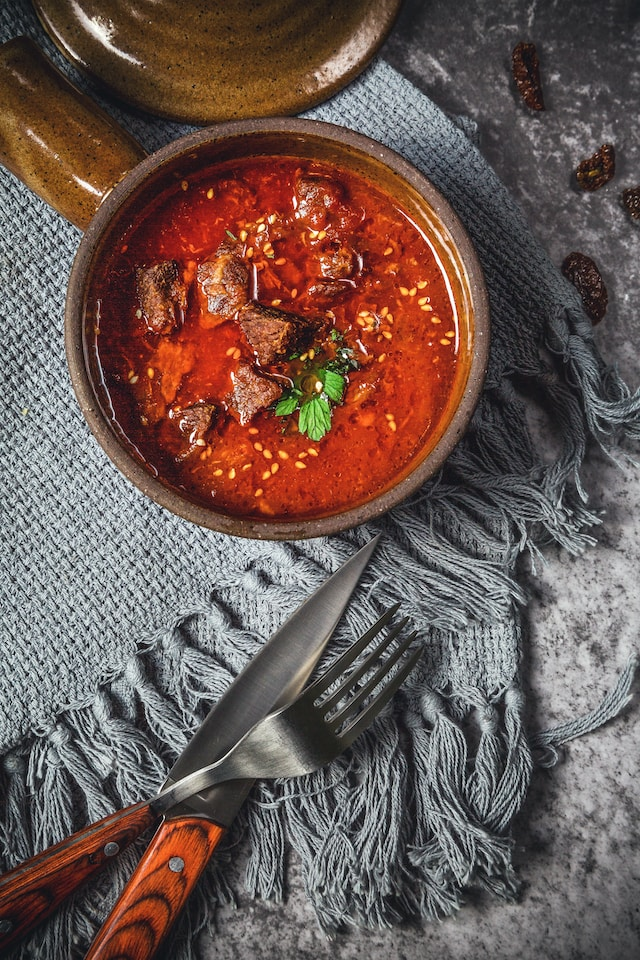

Delicious mutton rogan josh

Warm your dinner table with this hearty, meaty curry.Straight from a Kashmiri kitchen, here's a rogan josh recipe that has meat stirred along with a host of numerous aromatic spices and herbs, mixed with curd and pressure cooked till tender. A delicious dish to serve at dinner parties! Pair it up with onion rings and mint chutney.
Ingredients
- 1 Kg meat
- 1 cup refined oil
- 3 tsp chilli powder
- 2 tsp ginger powder
- 2 tsp cumin powder
- 2 cinamon sticks
- 2 bay leaves
- 1/3 tsp saffron
- 1 cup curd
- 1 pinch of salt
Steps
- Wash the meat properly. Heat oil in a pressure cooker.
- Put cinnamon, bay leaves, green cardamom, cloves, a teaspoon of salt, asafoetida, and meat together.
- Fry meat till it turns brown. Once browned, pour a cup of water.
- Add the red chili powder and saffron into the meat. Keep stirring for about a minute.
- Mix the curd nicely in the mixer and pour it into the pressure cooker.
- Keep on stirring till you get a reddish tinge.
- Add 2 cups of water, fennel powder, ginger powder, and pressure cook for 2 minutes.
- Check if the meat is tender. Peel and grind green and brown cardamom and add to the meat dish.
- Finally sprinkle cumin powder and simmer for a minute and serve.
Back to Homepage